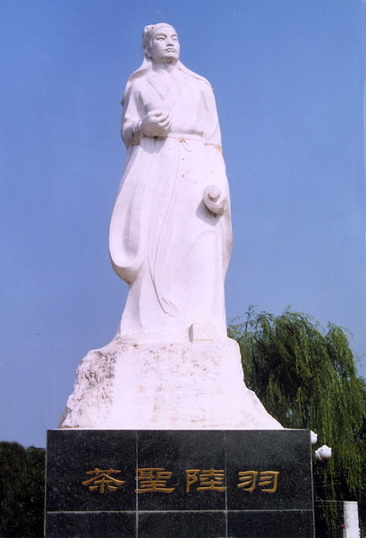

中国茶道的概念与内涵
茶道发源于中国。中国茶道兴于唐，盛于宋、明，衰于近代。宋代以后，中国茶道传入日本、朝鲜，获得了新的发展。今人往往只知有日本茶道，却对作为日、韩茶道的源头、具有一千多年历史的中国茶道知之甚少。这也难怪，"道"之一字，在汉语中有多种意思，如行道、道路、道义、道理、道德、方法、技艺、规律、真理、终极实在、宇宙本体、生命本源等。因"道"的多义，故对"茶道"的理解也见仁见智，莫衷一是。笔者认为，中国茶道是以修行得道为宗旨的饮茶艺术，其目的是借助饮茶艺术来修炼身心、体悟大道、提升人生境界。
中国茶道是"饮茶之道"、"饮茶修道"、"饮茶即道"的有机结合。"饮茶之道"是指饮茶的艺术，"道"在此作方法、技艺讲；"饮茶修道"是指通过饮茶艺术来尊礼依仁、正心修身、志道立德；"道"在此作道德、真理、本源讲；"饮茶即道"是指道存在于日常生活之中，饮茶即是修道，即茶即道。"道"在此作真理、实在、本体、本源讲。下面分别予以阐释之。
一、中国茶道：饮茶之道
唐人封演的《封氏闻见记》卷六"饮茶"记载："楚人陆鸿渐为茶论，说茶之功效并煎茶炙茶之法，造茶具二十四式以都统笼贮之，远近倾慕，好事者家藏一副。有常伯熊者，又因鸿渐之论广润色之，于是茶道大行，王公朝士无不饮者。"
陆羽，字鸿渐，又字季疵，号桑苎翁，唐代复州竟陵人(今湖北天门县人）。陆羽著《茶经》三卷，分一之源、二之具、三之造、四之器、五之煮、六之饮、七之事、八之出、九之略、十之图十章。四之器叙述炙茶、煮水、煎茶、饮茶等器具二十四种，即封氏所说"造茶具二十四式"。五之煮、六之饮说"煎茶炙茶之法"，对炙茶、碾末、取火、选水、煮水、煎茶、酌茶的程序、规则作了细致的论述。封氏所说的"茶道"就是指陆羽《茶经》倡导的"饮茶之道。"《茶经》不仅是世界上第一部茶学著作，也是第一部茶道著作。

中国茶道约成于中唐之际，陆羽是中国茶道的鼻祖。陆羽《茶经》所倡导的"饮茶之道"实际上是一种艺术性的饮茶，它包括鉴茶、选水、赏器、取火、炙茶、碾末、烧水、煎茶、酌茶、品饮等一系列的程序、礼法、规则。中国茶道即"饮茶之道"，即是饮茶艺术。
中国的"饮茶之道"，除《茶经》所载之外，宋代蔡襄的《茶录》、宋徽宗赵佶的《大观茶论》、明代朱权的《茶谱》、钱椿年的《茶谱》、张源的《茶录》、许次纾的《茶疏》等茶书都有许多记载。今天广东潮汕地区、福建武夷地区的"工夫茶"则是中国古代"饮茶之道"的继承和代表。工夫茶的程序和规划是：恭请上座、焚香静气、风和日丽、嘉叶酬宾、岩泉初沸、盂臣沐霖、乌龙入宫、悬壶高冲、春风拂面、薰洗仙容、若琛出浴、玉壶初倾、关公巡城、韩信点兵、鉴赏三色、三龙护鼎、喜闻幽香、初品奇茗、再斟流霞、细啜甘莹、三斟石乳、领悟神韵.
二、中国茶道：饮茶修道
陆羽的挚友、诗僧皎然在其《饮茶歌诮崔石使君》诗中写道："一饮涤昏寐，情思爽朗满天地；再饮清我神，忽如飞雨洒轻尘；三饮便得道，何须苦心破烦恼。……熟知茶道全尔真，唯有丹丘得如此。"皎然认为，饮茶能清神、得道、全真，神仙丹丘子深谙其中之道。皎然此诗中的"茶道"是关于"茶道"的最早记录。
唐代诗人玉川子卢仝的《走笔谢孟谏议寄新茶》一诗脍炙人口，"七碗茶"流传千古，卢仝也因此与陆羽齐名。"一碗喉吻润，两碗破孤闷。三碗搜枯肠，唯有文字五千卷。四碗发清汗，平生不平事，尽向毛孔散。五碗肌骨清，六碗通仙灵。七碗吃不得也。唯觉两腋习习清风生。"唐代诗人钱起《与赵莒茶宴》诗曰："竹下忘言对紫茶，全胜羽客醉流霞。尘心洗尽兴难尽，一树蝉声片影斜。"唐代诗人温庭筠《西陵道士茶歌》诗中则有"疏香皓齿有余味，更觉鹤心通杳冥。"这些诗是说饮茶能让人"通仙灵"，"通杳冥"，"尘心洗尽"，羽化登仙，胜于炼丹服药。
唐末刘贞亮倡茶有"十德"之说，"以茶散郁气，以茶驱睡气，以茶养生气，以茶除病气，以茶利礼仁，以茶表敬意，以茶尝滋味，以茶可行道，以茶可雅志。"饮茶使人恭敬、有礼、仁爱、志雅，可行大道。
赵佶《大观茶论》说茶"祛襟涤滞，致清导和"，"冲淡闲洁，韵高致静"，"天下之士，励志清白，竟为闲暇修索之玩。"朱权《茶谱》记："予故取烹茶之法，米茶之具，崇新改易，自成一家。……乃与客清谈欺话，探虚玄而参造化，清心神而出尘表。"赵佶、朱权的帝、王的高贵身份，撰著茶书，力行茶道。
由上可知，饮茶能恭敬有礼、仁爱雅志、致清导和、尘心洗尽、得道全真、探虚玄而参造化。总之，饮茶可资修道，中国茶道即是"饮茶修道"。
三、中国茶道：饮茶即道
老子认为："道法自然"。庄子认为"道"普遍地内化于一切物，"无所不在"，"无逃乎物"。 马祖道一禅师主张"平常心是道"，其弟子庞蕴居士则说："神通并妙用，运水与搬柴"，其另一弟子大珠慧海禅师则认为修道在于"饥来吃饭，困来即眠"。道一的三传弟子、临济宗开山祖义玄禅师又说："佛法无用功处，只是平常无事。屙屎送尿，著衣吃饭，困来即眠"。道不离于日常生活：修道不必于日用平常之事外用功夫，只须于日常生活中无心而为，顺任自然。自然地生活，自然地作事，运水搬柴，著衣吃饭，涤器煮水，煎茶饮茶，道在其中，不修而修。
《五灯会元》南岳下三世，南泉愿禅师法嗣，赵州从谂禅师，"师问新到：'曾到此间否?'曰：'曾到。'师曰：'吃茶去。'又问僧，僧曰：'不曾到。'师曰：'吃茶去。'后院主问曰：'为甚么曾到也云吃茶去，不曾到也云吃茶去?'师召院主，主应诺，师曰：'吃茶去。"从谂是南泉普愿的弟子，马祖道一的徒孙。普愿、从谂虽未创宗立派，但他们在禅门影响很大。茶禅一味，道就寓于吃茶的日常生活之中，道不用修，吃茶即修道。后世禅门以"吃茶去"作为"机锋"、"公案"，广泛流传。当代佛学大师赵朴初先生诗曰："空持百千偈，不如吃茶去。"
《五灯会元》南岳下四世，沩山祜禅师法嗣，仰山慧寂禅师，"……又问：'和尚还持戒否?'师曰：'不持戒。'曰：'还坐禅否?'师曰：'不坐禅。'公良久。师曰：'会么?'曰：'不会。'师曰：'听老职僧一偈：滔滔不持戒，兀兀不坐禅，酽茶三两碗，意在攫头边。一仰山慧寂是沩山灵祜的嗣法弟子，师徒二人共同创立了禅宗五家中的沩仰宗。慧寂认为，不须持戒，不须从禅，唯在饮茶、劳作。
道法自然，修道在饮茶。大道至简，烧水煎茶，无非是道。饮茶即道，是修道的结果，是悟道后的智慧，是人生的最高境界，是中国茶道的终极追求。顺其自然，无心而为，要饮则饮，从心所欲。不要拘泥于饮茶的程序、礼法、规则，贵在朴素、简单，于自然的饮茶之中默契天真，妙合大道。
四、中国茶道：艺、修、道的结合
综上所说，中国茶道有三义：饮茶之道、饮茶修道、饮茶即道。饮茶之道是饮茶的艺术，且 是一门综合性的艺术。它与诗文、书画、建筑、自然环境相结合，把饮茶从日常的物质生活上升到精神文化层次；饮茶修道是把修行落实于饮茶的艺术形式之中，重在修炼身心、了悟大道；饮茶即道是中国茶道的最高追求和最高境界，煮水烹茶，无非妙道。
在中国茶道中，饮茶之道是基础，饮茶修道是目的，饮茶即道是根本。饮茶之道，重在审美艺术性；饮茶修道，重在道德实践性；饮茶即道，重在宗教哲理性。
中国茶道集宗教、哲学、美学、道德、艺术于一体，是艺术、修行、达道的结合。在茶道中，饮茶的艺术形式的设定是以修行得道为目的的，饮茶艺术与修道合二而一，不知艺之为道，道之为艺。
中国茶道既是饮茶的艺术，也是生活的艺术，更是人生的艺术。